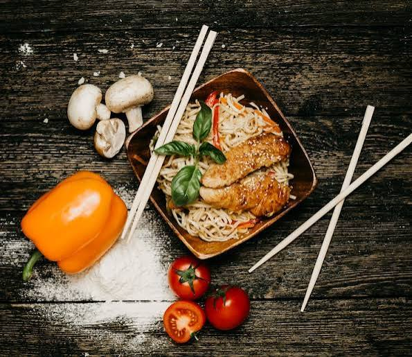
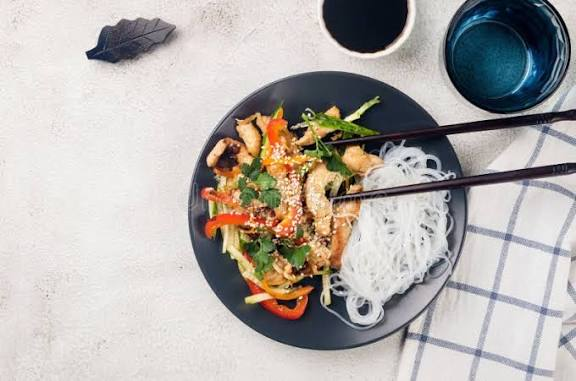

STARTER
Vegetable Spring Rolls
Crispy rolls filled with seasoned vegetables.
UGX 10,000
Crispy rolls filled with seasoned vegetables.
UGX 10,000
Soft dumplings served with a savoury dipping sauce.
UGX 14,000.jpg)
Wok-tossed noodles, vegetables and chilli sauce.
UGX 18,000Fragrant rice with egg, vegetables and savoury seasoning.
UGX 15,000Tender chicken, peppers and aromatic seasoning.
UGX 25,000Thin beef strips wok-fried with vegetables and spice.
UGX 28,000Tofu, seasonal vegetables and a light savoury sauce.
UGX 20,000Hot, fragrant tea served by the cup.
UGX 5,000Chilled seasonal fruit juice.
UGX 8,000